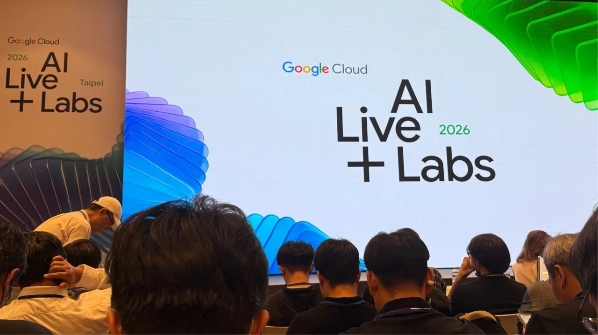
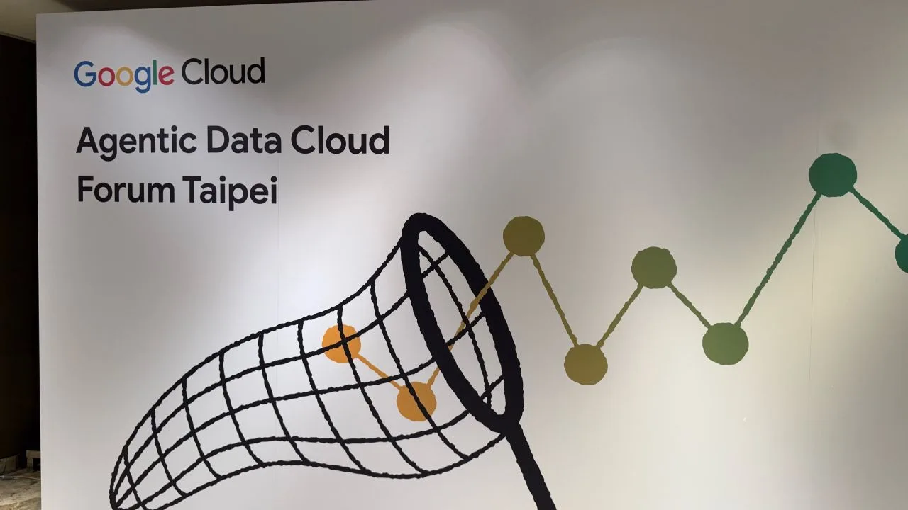
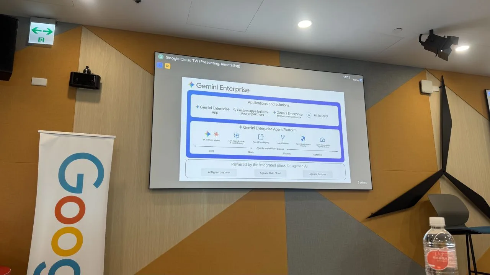
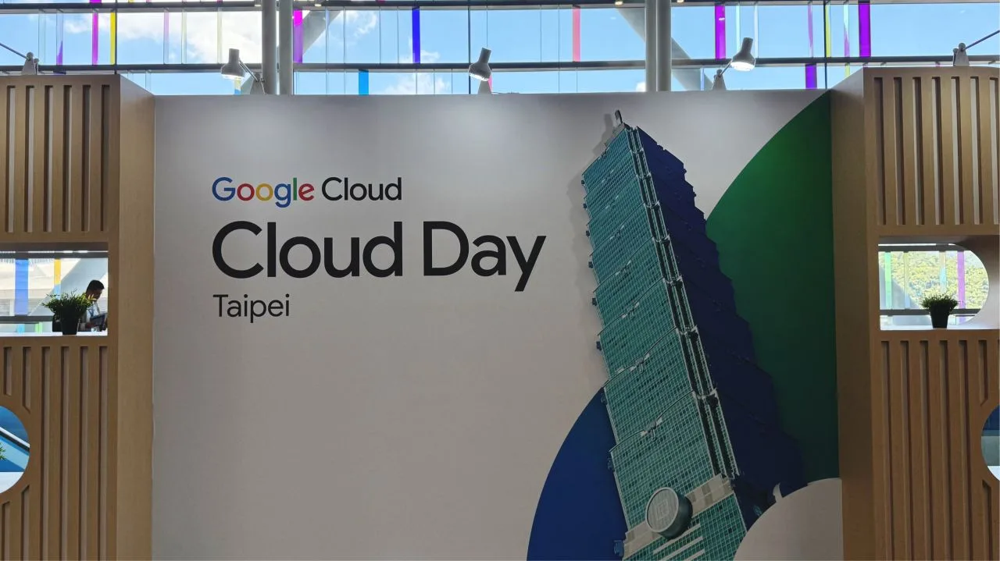

AI 概念驗證
PoC 與技術可行性驗證
Sing-Yu Chen｜陳星伃
開發可實際上線的 AI 應用，涵蓋全端系統、LLM／RAG 與雲端部署。
02 / IMPACT
PoC 與技術可行性驗證
從需求到部署完整完成
參與重要公部門系統交付
技術規劃、架構與系統交付
03 / EXPERIENCE
使用 Python、R 進行資料清理、統計分析、視覺化與模型驗證。
EDUCATION
Master · Data & Business Analytics · France
EDUCATION
Department of Statistics and Information Science · B.S.
04 / FEATURED PROJECTS
每項專案都涵蓋角色、架構、挑戰、解法與量化影響。
ENTERPRISE AI PRODUCT
主導產品架構、前後端、資料庫、RAG、Agent、Workflow、模型部署與整合。
DOCUMENT INTELLIGENCE
FULL-STACK & HYBRID AI
COMPUTER VISION
以 SIFT、FLANN、Affine Transformation 完成影像對齊、穩定化與縮時影片輸出。
05 / SKILLS & CERTIFICATIONS
RAG · AI Agents · Prompt Engineering · OCR · Structured Output · Schema Validation
Python · FastAPI · Flask · Node.js · RESTful API
React · TypeScript · JavaScript · PWA
PostgreSQL · Supabase · MySQL · pgvector · DuckDB · ETL
GCP · AWS · Docker · Cloud Run · Compute Engine · Vertex AI · Caddy
OpenCV · SIFT · FLANN · Image Alignment · Video Processing
正式認證
課程完成紀錄
06 / PERSONAL SIDE PROJECT
獨立設計、開發與部署的 AI 英語口說及雙人旅行協作 PWA。
07 / TECH COMMUNITY & EVENTS

AI活動紀錄：Sing-Yu ChenAgentic AI · Gemini Enterprise · ADK
Agent Orchestration、Token Optimization 與成本控制。

DATA活動紀錄：Sing-Yu ChenBigQuery · Data Agents · Data Governance
可信任的企業資料與 AI-driven Analytics。

WORKSHOP活動紀錄：Sing-Yu ChenGEAP · Multi-Agent Systems · Governance
企業 Agent 架構、多代理協作與治理機制。

GCP活動紀錄：Sing-Yu ChenAI Engineering · Cloud Architecture · MLOps
從 Prototype 到 Production 的系統可靠性與架構設計。